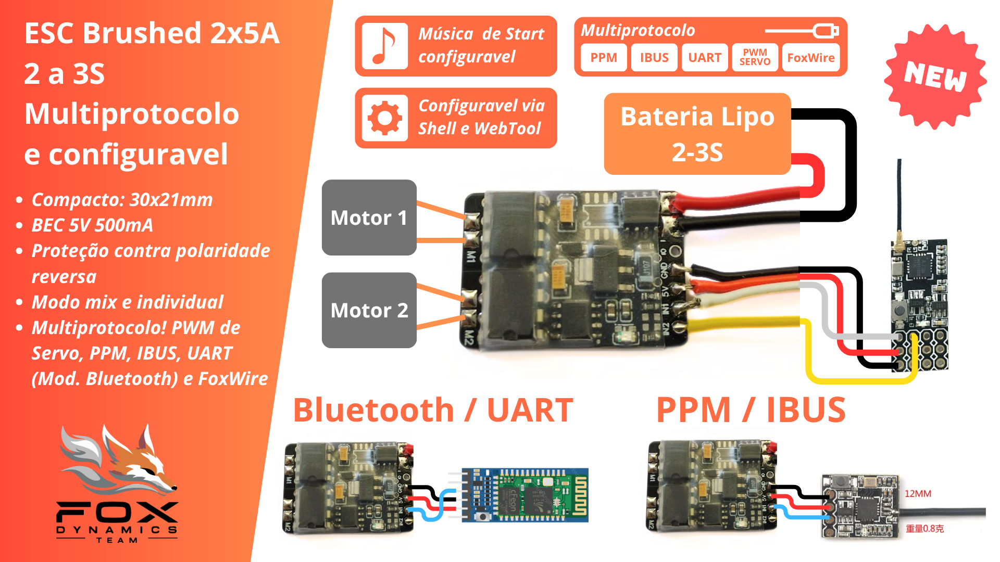
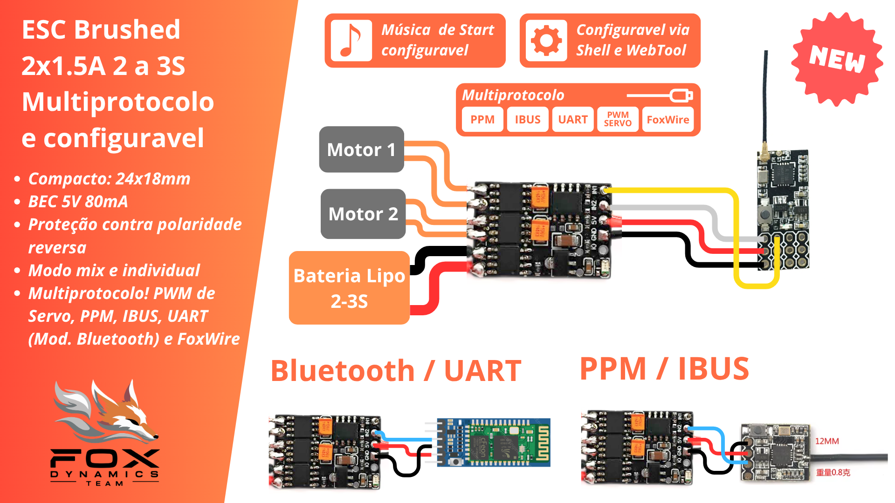
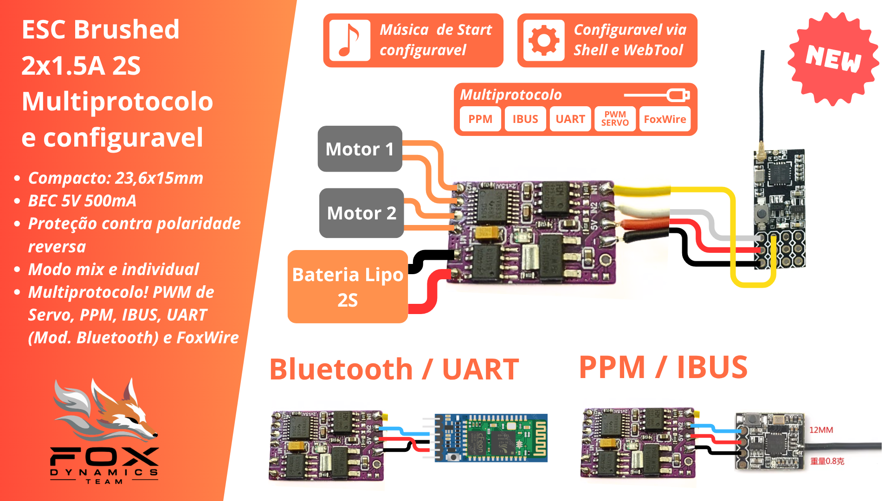

ESCs brushed duplo
aviso: Documentação em desenvolvimento.
ESCs para dois motores escovados multiprotocolo, configuravel e com música.
...
Características Técnicas
| Modelo | Tensão | Bateria | Corrente | BEC |
|---|---|---|---|---|
| ESC Brushed 2 x 1.5A | 6V até 10V | 2S | até 1.5A por motor | 5V 500mA |
| ESC Brushed 2 x 3A | 6V até 15V | 2 a 3S | até 3A por motor | 5V 200mA |
| ESC Brushed 2 x 5A | 6V até 14V | 2 a 3S | até 5A por motor | 5V 500mA |
ESC 2x5A Brushed

ESC 2x3A Brushed

ESC 2x1.5A Brushed

Protocolos e compatibilidade
- Sinal PWM de servo
- PPM
- IBUS
- FoxWire
- UART (Módulos Bluetooth também)